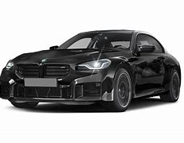

The BMW M2 is a high-performance version of the BMW 2 Series automobile developed by BMW's motorsport division, BMW M GmbH. As the 2 Series replaced the 1 Series coupé and convertible models, the first-generation M2 was marketed as the most basic M model in the range.
1. Design by Domagoj Dukec
2. 3.0 liter inline six mid-engine
3. Max. output: 453 hp and 406lb of torque
4. Max. speed: 250 km/h
5. THousands of units sold